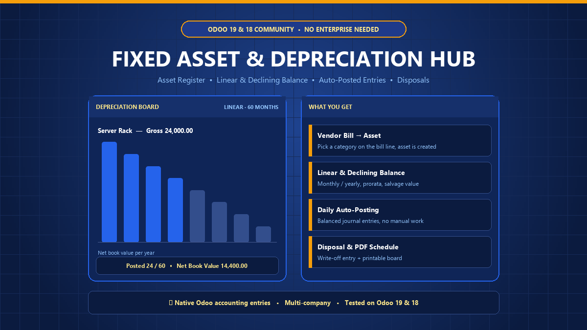
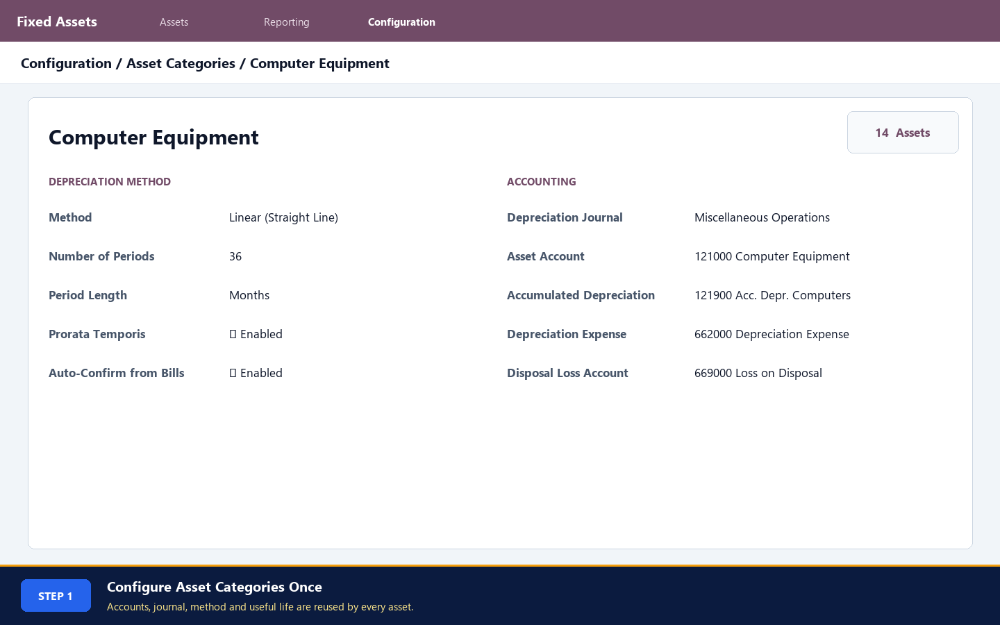
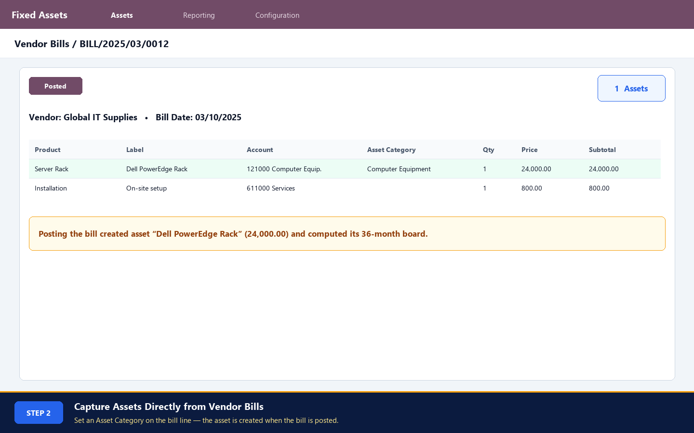
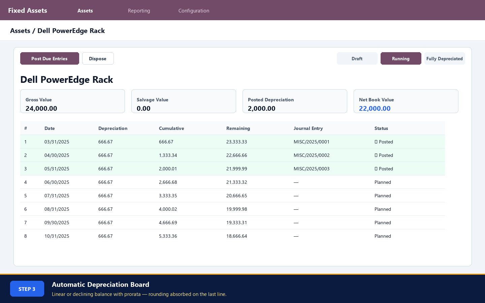
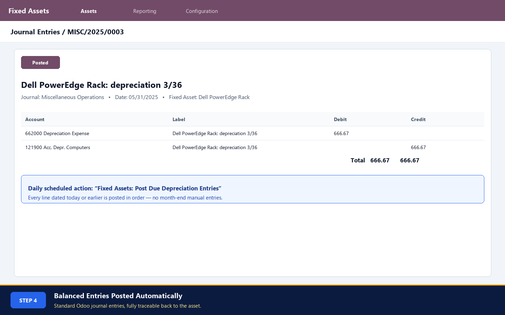
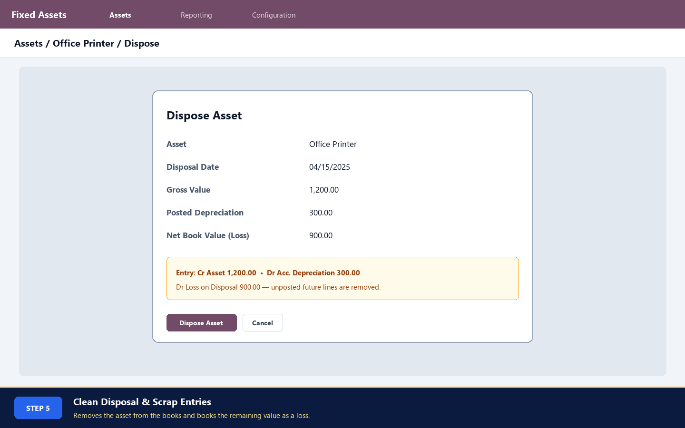
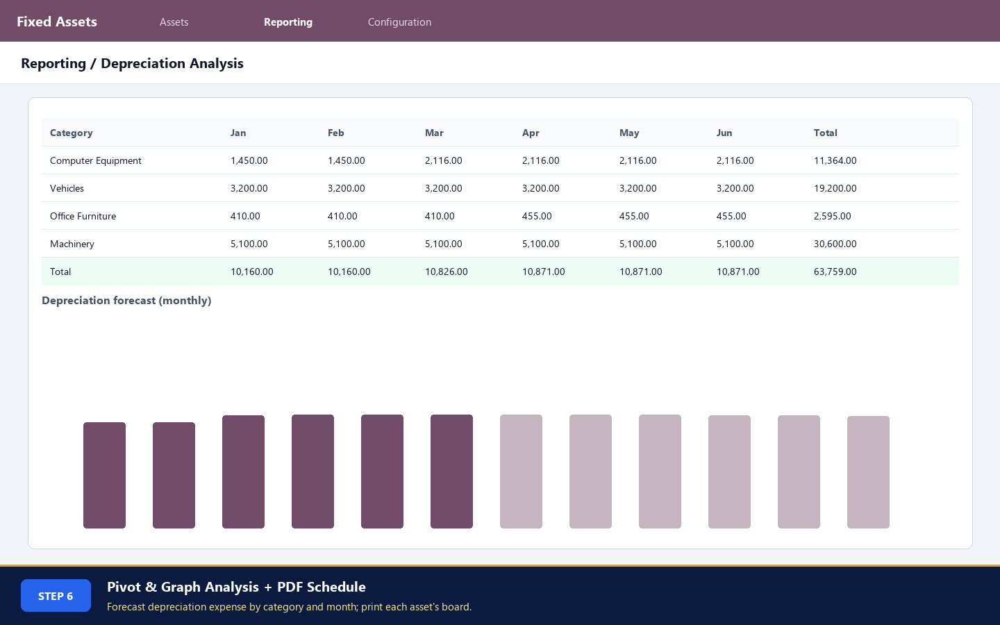

Asset accounting is exclusively locked behind Odoo Enterprise. This native Community hub provides a complete, compliant fixed asset register: automate linear & declining-balance depreciation boards, capture assets directly from vendor bills, post balanced monthly entries via daily automated cron, and execute clean scrap & disposal write-offs.
ENTERPRISE ARCHITECTURE • COMMUNITY FREEDOM
Standardize accounting rules across your business. Preset asset balance sheet accounts, accumulated depreciation contra-accounts, depreciation expense, and default duration.
Eliminate double data entry. When accountants book supplier purchases for capital equipment, simply select an Asset Category on the bill line to generate draft or active assets automatically.
Supports Straight Line (Linear) and Declining Balance (Degressive) methods. Handles Prorata Temporis daily calculation for partial first periods, salvage values, and currency rounding.
An automated Odoo cron scheduler runs daily to post due depreciation entries in correct chronological sequence. Balanced journal entries link directly to the asset card with complete chatter tracking.
When assets are scrapped or retired before full depreciation, the Disposal Wizard cancels future unposted lines and generates a balanced write-off entry transferring Net Book Value to Disposal Loss.
HOW IT WORKS • 6 HIGH-DEFINITION STEPS
Define standardized categories (e.g. Computer Equipment, Vehicles, Machinery) with associated General Ledger accounts, depreciation journal, and method duration.

Accountants simply select the target Asset Category when entering supplier bills. The moment the bill is confirmed, an asset is instantiated with matching acquisition costs.

The full multi-year schedule is calculated down to the exact cent. Displays period depreciation, cumulative depreciated value, and remaining net book value with rounding absorption.

Every due line automatically creates and validates a standard Odoo journal entry: Debits Depreciation Expense and Credits Accumulated Depreciation.

Dispose of obsolete or damaged assets in one step. Unposted lines are removed, gross value is cleared, and remaining net book value is booked to the Disposal Loss account.

Analyze future depreciation expense across categories and months with interactive pivot tables and bar graphs. Print customer-ready formal PDF schedules for tax and auditing.

No! This module is built specifically for Odoo 19.0 & 18.0 Community Edition. It brings full fixed asset accounting natively without requiring any paid Enterprise subscription.
A background scheduled action runs daily. It identifies all unposted depreciation lines on running assets whose date is on or before today, and creates and confirms balanced journal entries automatically.
When enabled, the first period's depreciation is scaled by the exact number of days remaining in the month or year after acquisition, and an additional period is appended so the full gross value is amortized.
Yes. Multi-company security rules isolate categories, assets, and depreciation lines per company. Accounts are validated against each company's chart of accounts.
We offer dedicated support, custom depreciation methods (units of production, French/German tax rules), Excel migration scripts, and bespoke accounting automations.
Direct Email: bhargavipasham2000@gmail.com
100% Clean Code • Compatible with Odoo 19.0 & 18.0 Community & Enterprise